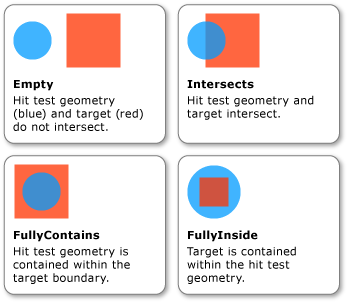

Практическое руководство. Проверка нажатия с использованием геометрии в качестве параметра
В этом примере показано, как выполнить проверку попадания для визуального объекта с помощью Geometry параметра проверки нажатия.
Пример
Приведенный ниже показано, как выполнить настройку проверки попадания с помощью GeometryHitTestParameters для HitTest метод. Point Значение, передаваемое OnMouseDown метод используется для создания Geometry объекта для расширения диапазона проверки попадания.
// Respond to the mouse button down event by setting up a hit test results callback.
private void OnMouseDown(object sender, MouseButtonEventArgs e)
{
// Retrieve the coordinate of the mouse position.
Point pt = e.GetPosition((UIElement)sender);
// Expand the hit test area by creating a geometry centered on the hit test point.
EllipseGeometry expandedHitTestArea = new EllipseGeometry(pt, 10.0, 10.0);
// Clear the contents of the list used for hit test results.
hitResultsList.Clear();
// Set up a callback to receive the hit test result enumeration.
VisualTreeHelper.HitTest(myControl, null,
new HitTestResultCallback(MyHitTestResultCallback),
new GeometryHitTestParameters(expandedHitTestArea));
// Perform actions on the hit test results list.
if (hitResultsList.Count > 0)
{
ProcessHitTestResultsList();
}
}
IntersectionDetail Свойство GeometryHitTestResult предоставляет сведения о результатах проверки нажатия, который использует Geometry параметра проверки нажатия. На следующем рисунке показана связь между геометрическим объектом проверки нажатия (синий круг) и отображенным содержимым целевого визуального объекта (красный квадрат).

Приведенный ниже показано, как реализовать обратный вызов проверки нажатия при Geometry используется в качестве параметра проверки нажатия. result Параметр приводится к GeometryHitTestResult для извлечения значения IntersectionDetail свойство. Это значение позволяет определить, если Geometry параметр проверки нажатия полностью или частично содержится в отображаемом содержимом целевого объекта проверки нажатия. В этом случае пример кода только добавляет результаты проверки попадания в список визуальных объектов, которые полностью содержатся в пределах границ целевого объекта.
// Return the result of the hit test to the callback.
public HitTestResultBehavior MyHitTestResultCallback(HitTestResult result)
{
// Retrieve the results of the hit test.
IntersectionDetail intersectionDetail = ((GeometryHitTestResult)result).IntersectionDetail;
switch (intersectionDetail)
{
case IntersectionDetail.FullyContains:
// Add the hit test result to the list that will be processed after the enumeration.
hitResultsList.Add(result.VisualHit);
return HitTestResultBehavior.Continue;
case IntersectionDetail.Intersects:
// Set the behavior to return visuals at all z-order levels.
return HitTestResultBehavior.Continue;
case IntersectionDetail.FullyInside:
// Set the behavior to return visuals at all z-order levels.
return HitTestResultBehavior.Continue;
default:
return HitTestResultBehavior.Stop;
}
}
Note
HitTestResult Обратного вызова не должен быть вызван, если пересечения — Empty.